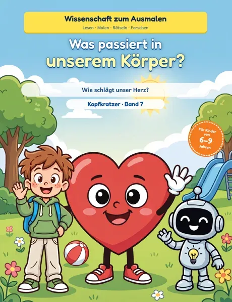

Band 7 · Wissenschaft zum Ausmalen
Was passiert in unserem Körper?
Wie schlägt unser Herz?
Kardia ist ein kleines Herz mit roten Turnschuhen. Als Max Hampelmänner macht, hüpft Kardia direkt in sein Kinderzimmer – zu Max und dem Forscher-Roboter Lumi. Gemeinsam finden die drei heraus, wie das Herz das Blut pumpt, wie wir atmen und wohin das Essen im Bauch wandert.
So lernen Kinder ganz nebenbei, wie Knochen und Muskeln zusammenarbeiten und wie das Gehirn mit den fünf Sinnen alles steuert.
Bald bei AmazonBlick ins Buch
- Alter
- 6–9 Jahre
- Umfang
- 80 Seiten
- Format
- 21,6 × 27,9 cm
Inhalt
Das steckt im Buch
Komm mit auf Kardias Reise
- Einfache Erklärungen in kurzen Sätzen
- Über 40 Bilder zum Ausmalen
- 4 Experimente für zu Hause
- Rätsel, Labyrinthe und ein Wissenstest
- Forscher-Notizen und eine Urkunde
Für Kinder von 6 bis 9 Jahren, zum Selberlesen oder Vorlesen. Format 21,6 × 27,9 cm, 80 Seiten.
Die Kapitel
- Kardia kommt zu Besuch
- Herz und Blut
- Luft zum Atmen
- Die Reise des Essens
- Knochen und Muskeln
- Gehirn und Sinne
Die Experimente
- Den Puls fühlen
- Der Spiegel-Trick
- Süßes Brot
- Starke Röhren
Leseprobe
Blick ins Buch
Einige Seiten zum Anschauen. Zum Vergrößern anklicken.